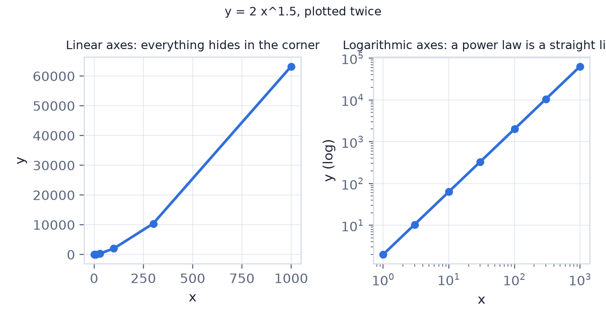
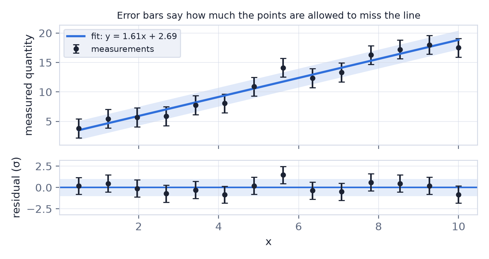
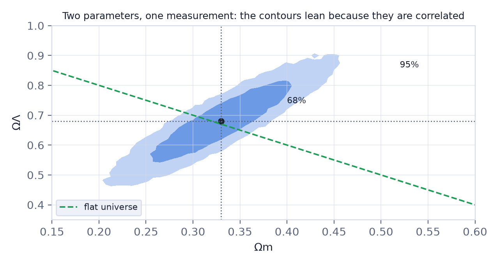

In this lesson you will learn
|
The plot is the argument
Almost every claim in this course arrived as a picture: Hubble's 24 galaxies, the supernova Hubble diagram, the peaks of the CMB power spectrum, a rotation curve that refuses to fall. A cosmologist reads those pictures the way a musician reads a score. This lesson teaches that reading.
Logarithmic axes
Cosmology spans huge ranges: redshifts from 0.01 to 1100, distances from parsecs to gigaparsecs, times from 10⁻³⁵ seconds to 14 billion years. On a linear axis, everything interesting piles up against one edge. A logarithmic axis plots the exponent instead of the number, so each equal step multiplies by ten.

Two habits follow from this:
- A power law becomes a straight line on log–log axes, and the slope of that line is the exponent . Much of physics is spent looking for straight lines on log paper.
- Equal visual distances mean equal ratios. The gap between 1 and 10 is the same as the gap between 100 and 1000.
A log axis hides the zero Zero is infinitely far to the left on a logarithmic axis, so it never appears. Negative values cannot be shown at all. If a plot needs both signs — a residual, a temperature fluctuation — the axis has to be linear, or symmetric-log. |
Error bars
An error bar is a statement about how much the point is allowed to be wrong. In almost all of astronomy it means one standard deviation: if the measurement were repeated many times, about 68% of the results would fall inside the bar, and about 95% inside twice the bar.

What a good fit looks like A line that passes through every point exactly is suspicious, not impressive. With honest error bars, roughly a third of the points should miss the line by more than one error bar. If none do, the errors were overestimated — or the model has too many free parameters. |
Two kinds of uncertainty hide in that bar:
- Statistical: the randomness of a finite measurement. It shrinks as when you collect more data.
- Systematic: a bias that repeats every time — a miscalibrated instrument, dust you forgot, a selection effect. Collecting more data does not shrink it. Most disputes in cosmology, including the Hubble tension, are arguments about systematics.
Residuals: where the story is
Raw data plots are dominated by the trend everyone already agrees on. Subtract the model and plot what is left — the residuals — and the disagreements become visible. The lower panel of the figure above is the same data with the fitted line removed; deviations of a few percent, invisible in the top panel, stand out immediately.
Reading the supernova diagram On a plain Hubble diagram, an accelerating universe and a decelerating one look almost identical: both are nearly straight lines. Plotted as residuals against an empty universe, the 1998 supernovae sat systematically 0.2 magnitudes too faint — and that gap is the discovery of dark energy (lesson L3.3). |
Contours: two parameters at once
When a measurement constrains two parameters together, the answer is not two error bars but a region in the plane of the two.

- The inner contour holds 68% of the probability, the outer 95%.
- A tilted ellipse means the parameters are correlated: the data measure one combination of them well and the other poorly. Supernovae, for instance, measure roughly tightly and their sum weakly, which is exactly why the contour lies at an angle to the flat-universe line.
- Quoting a single parameter from such a plot means marginalising: squashing the cloud onto one axis, which widens the interval.
Why two experiments are worth more than twice one Two measurements with contours that cross at a large angle pin down both parameters together, even if neither can do it alone. This is why the CMB, supernovae and baryon acoustic oscillations are always shown on the same plane. |
Try it: Likelihood & MCMC Explorer Run the chain and look at the posterior: the tilted cloud in the Ωm–ΩΛ plane is exactly the contour picture, sampled point by point. |
A checklist
When you meet a new plot, ask:
- What are the axes, and are they linear or logarithmic?
- Are those error bars statistical only, or do they include systematics?
- Is anything divided out — is this raw data, or residuals against a model?
- If it is a contour plot: what confidence level, and how many parameters were marginalised over?
- What would the plot look like if the claim were false?
Remember this
|